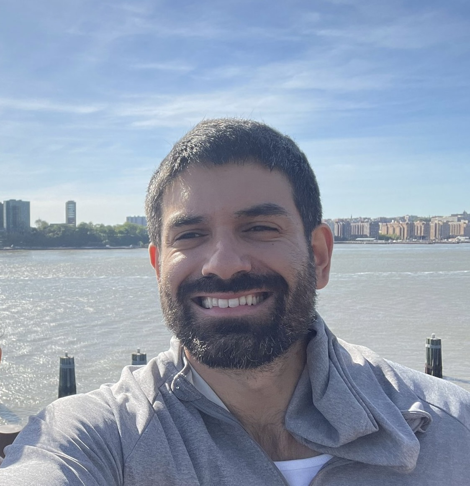

Ahmed Bou-Rabee

Courant Institute
Department of Mathematics
Office: 1007 Warren Weaver Hall
Email:
ahmedmb@gmail.com
I am an
NSF Postdoctoral Fellow
at the
Courant Institute
sponsored by
Scott Armstrong
. I began my fellowship at
Cornell University
sponsored by
Lionel Levine
. I received my PhD at the
University of Chicago
under the supervision of
Charles K. Smart
in June 2022. Previously, I received a B.S. in mathematics and an M.S. in statistics from
Stanford University
.
I am interested in probability and partial differential equations. Some topics I have worked on include quantitative stochastic homogenization, the
Abelian sandpile
, and Liouville quantum gravity.
Publications and Preprints
Superdiffusive central limit theorem for a Brownian particle in a critically-correlated incompressible random drift
, with
Scott Armstrong
and
Tuomo Kuusi
.
[arXiv:2404.01115]
[Blog]
Unique continuation on planar graphs
, with
Bill Cooperman
and
Shirshendu Ganguly
.
[arXiv:2309.13728]
Rigidity of harmonic functions on the supercritical percolation cluster
, with
Bill Cooperman
and
Paul Dario
.
[arXiv:2303.04736]
Internal DLA on mated-CRT maps
, with
Ewain Gwynne
.
Annals of Probability,
to appear.
[arXiv:2211.04891]
Harmonic balls in Liouville quantum gravity
, with
Ewain Gwynne
.
[arXiv:2208.11795]
Integer superharmonic matrices on the F-lattice
.
Advances in Mathematics
, 436, 109400 (2024).
[Journal]
[arxiv:2110.07556]
[Extended Appendix]
[Code]
Hamilton-Jacobi scaling limits of Pareto peeling in 2D
, with
Peter S. Morfe
.
Probability Theory and Related Fields
, 188, 235-307 (2024).
[Journal]
[arXiv:2110.06016]
[Code]
A shape theorem for exploding sandpiles
.
Annals of Applied Probability
34(1A): 714-742 (2024)
[Journal]
[arxiv:2102.04422]
[Notebook]
Dynamic dimensional reduction in the Abelian sandpile
.
Communications in Mathematical Physics
, 390, 933-958 (2022).
[Journal]
[arxiv:2009.05968]
[Code]
Convergence of the random Abelian sandpile
.
Annals of Probability
49(6): 3168-3196 (2021).
[Journal]
[arxiv:1909.07849]
[Pictures]
Talks
IMSI
,
Two-Dimensional Random Geometry
, July 8-12, 2024
Aalto University,
Probabilistic Field Theories
, June 17-19, 2024
University of Rochester Probability Seminar, May 3, 2024
MIT Analysis Seminar, April 16, 2024
NYU Probability Seminar, April 12, 2024
McGill University Probability Seminar, March 28, 2024
The Fields Institute, KPZ meets KPZ, March 4-8, 2024
Los Angeles Probability Forum, February 29, 2024
University of Hagen, Analysis Seminar, November 29, 2023
NYU Analysis Seminar, November 2, 2023
AMS 2023 Fall Eastern Sectional Meeting, Special Session, September 9, 2023
Percolation and interactions, CIRM, August 3, 2023
43rd Conference on Stochastic Processes and their Applications
, Invited Session, July 26, 2023
Percolation Today
, April 4, 2023
University of British Columbia Probability Seminar, March 1, 2023
University of Victoria Dynamics and Probability Seminar, February 28, 2023
Institute for Advanced Study Probability Seminar, November 2, 2022
Penn/Temple Probability Seminar, November 1, 2022
Cornell Probability Seminar, October 24, 2022
Oberwolfach Universality: Random Matrices, Random Geometry and SPDEs, June 4, 2022
Yale Analysis Seminar, March 3, 2022
University of Utah Stochastics Seminar, February 25th, 2022
LU-NU-UMN Joint Probability Seminar, October 27, 2021
Bernoulli-IMS, Organized Session, July 22, 2021
Stanford Probability Seminar, May 10, 2021
UC Berkeley Probability Seminar, February 10, 2021
Cornell Math 7710 Guest Lecture,October 27, 2020
Cornell Probability Seminar, September 23, 2019
CCNY Mathematics Colloquium, September 19, 2019
Coding
Introduction to Abelian networks in Julia
[Notebook]
COVID-19 Data Visualization
COVID-19 Aggregate Forecasts
Tomography Visualizer
Teaching
New York University
In Fall 2023, Spring 2024 I am teaching MATH-UA 120 Discrete Mathematics.
University of Chicago
In Spring 2022 and 2019 I was a teaching assistant for
STAT 383 Measure-Theoretic Probability 2 at UChicago
.
In Winter 2022 I was a teaching assistant for STAT 33910 Financial Statistics.
In Fall 2021 I was a teaching assistant for STAT 312 Stochastic Processes.
In Winter 2021 I was a teaching assistant for STAT 33910 Financial Statistics.
In Spring 2020 I was a teaching assistant for STAT 234 Statistical Models and Methods.
In Fall 2020 I was a teaching assistant for STAT 25150 Introduction to Mathematical Probability.
In Fall 2017, 2018 I was a teaching assistant for
STAT 312 Stochastic Processes
.
In Winter and Spring 2017 I was a teaching assistant for STAT 220 Statistical Methods and Applications.
Chinese University of Hong Kong Shenzhen
In Summer 2016 I was a lecturer for
Introduction to Matrix Methods
.
Stanford
In Fall 2014 and 2015 I was a teaching assistant for
Introduction to Matrix Methods
.
In Winter 2014 I was a teaching assistant for
Convex Optimization
.